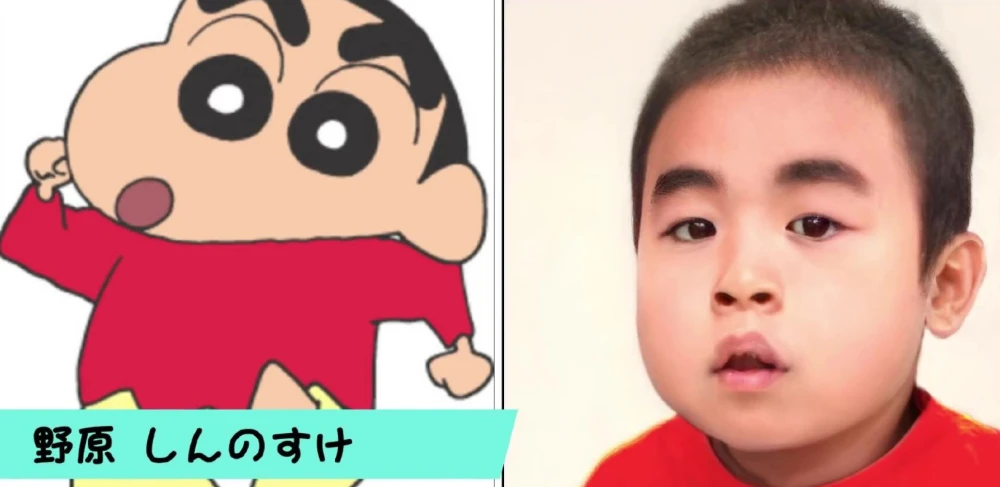
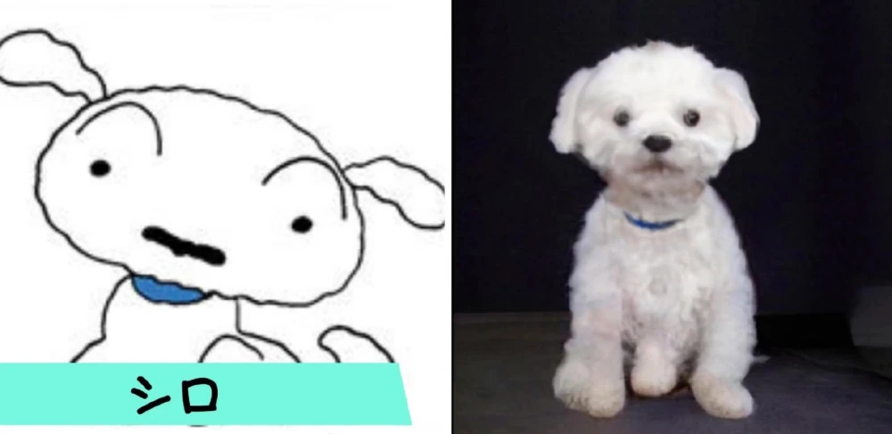
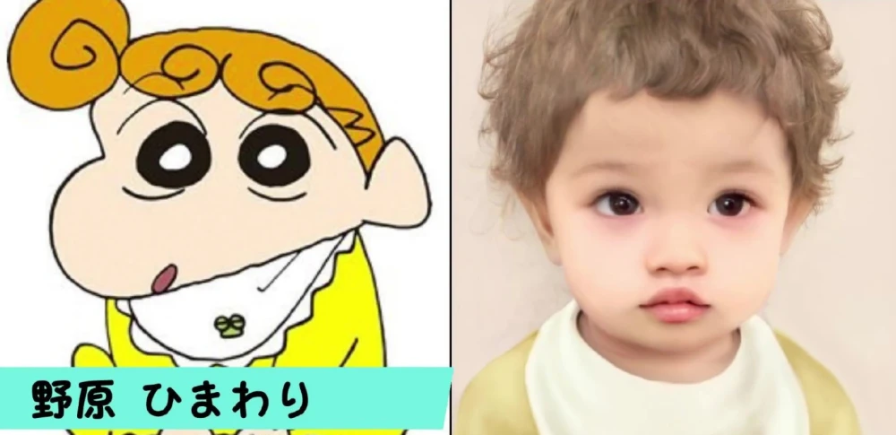
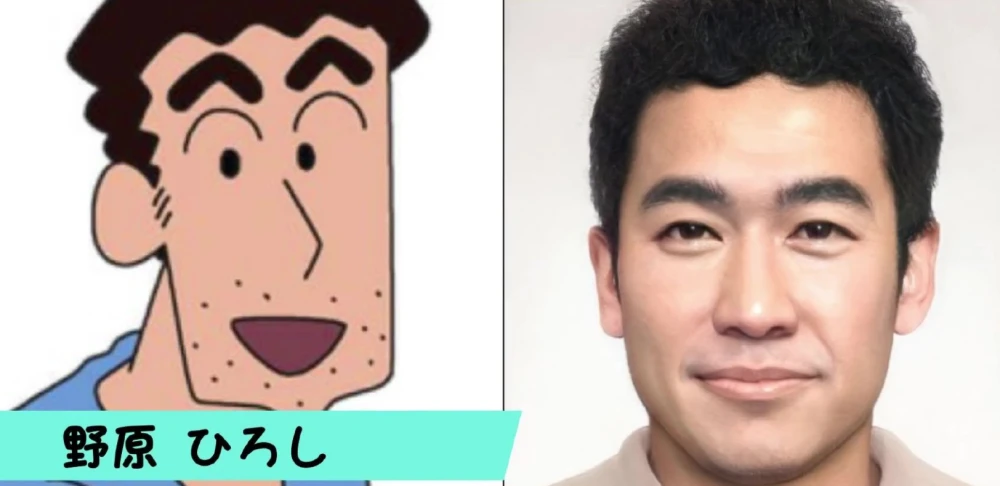
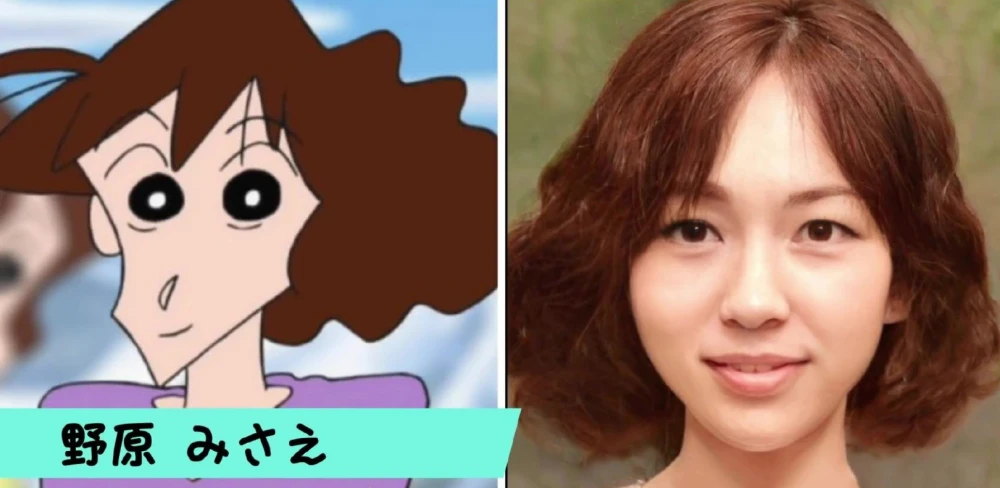

-

小新真人化
小新是个性格开朗活泼的男孩子，尽管他有时候很招人烦，但本质是一个热心、温柔、独特的孩子，从很多细节中就可以看出小新心思细腻。小新拥有真人化外形，可爱的嘟嘟脸依旧存在，但感觉不如动画版那样呆萌了。
-

小白真人化
小白作为野原家的宠物，是一只看起来像棉花糖的小狗，有时候还有着超出宠物的智慧头脑。虽然它不会说话，但在动画里表现的形象还是很招人喜欢的，真人化也是一只很可爱很活泼的小狗呢
-

小葵真人化
小葵作为小新的妹妹，也算是继承了野原广志的性格，特别喜欢看路上偶遇的帅哥。真人形象转化成了呆萌可爱的小孩子，一派天真无邪的模样，看起来也挺适合呢。
-

广志真人化
作为小新的父母，野原广志的真人形象看起来就是很普通的家长形象，动画版与真人版确实能够做到还原，连卷卷的头发也存在着很大的相似度。
-

美伢真人化
美冴的形象可谓是极其还原了，头发偏向于深棕色，还带着一点卷发。我们看动画版美冴的头发，或许不理解她的头发看起来很短，为什么支撑性这么好，实际上转化成真人形象，我们也能够理解了。